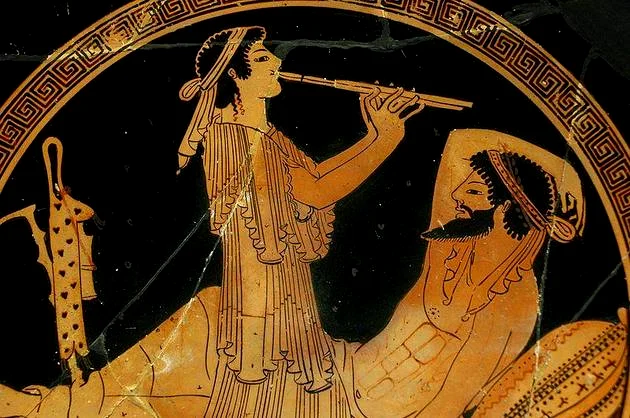
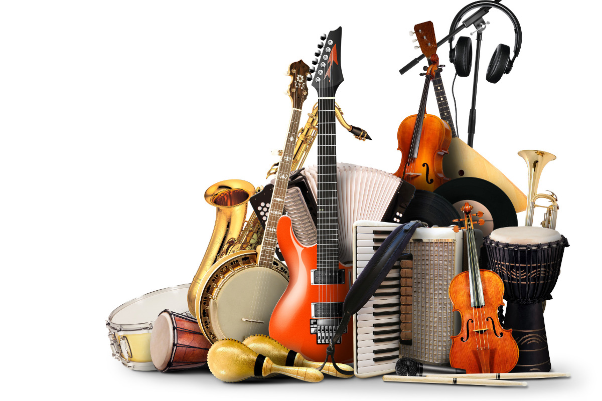

A música surgiu da percepção humana de que batidas entre objetos podem produzir sons significativos. Ao longo do tempo, teve múltiplas funções, desde reverenciar divindades até expressar emoções em períodos de conflito.
Melodia: sequência ordenada de sons que formam um tema musical principal.
Harmonia: combinação simultânea de sons que complementam a melodia, criando acordes e progressões harmoniosas.
Ritmo: organização temporal dos sons em unidades de tempo, como batidas, compassos e ritmos específicos.
Timbre: qualidade única do som de cada instrumento ou voz, permitindo distinguir entre diferentes fontes sonoras.
Dinâmica: variações de intensidade, volume e expressão ao longo da peça musical, adicionando contrastes e nuances emocionais.
 =======Conteúdo da seção 1
A música é uma presença poderosa em nossas vidas, permeando momentos de alegria, tristeza e relaxamento. Com influências individuais e experiências pessoais, cada um tem suas preferências musicais. No mundo, existem cerca de 400 a 500 gêneros musicais, refletindo a diversidade cultural global. Na rica tapeçaria musical brasileira, alguns dos principais gêneros se destacam, refletindo a diversidade do país. Vamos explorar alguns deles:
Samba
Símbolo do Brasil quando se fala em música, o samba teve sua origem no estado da Bahia e se espalhou pelas outras regiões brasileiras, principalmente no Rio de Janeiro.
Pagode
Trata-se de uma derivação do samba, este gênero surgiu entre as décadas de 1970 e 1980, no Rio de Janeiro nas rodinhas de samba, bastante comuns na época e localidade.
Forró
Com forte presença no Nordeste brasileiro, o forró teve seu ápice com a atuação de Luiz Gonzaga. Atualmente, há diferentes ritmos com algumas variações.
Jazz
Trata-se de um dos gêneros mais antigos de todo o mundo, caracterizado pela origem nas comunidades negras na região de Nova Orleans.
Rock
O rock, nascido nos anos 50, é globalmente reconhecido e comumente interpretado por bandas. Por outro lado, o sertanejo, originado nos anos 80, é um gênero brasileiro derivado da música caipira, com diversas variações, impulsionado por artistas como Chitãozinho e Xororó.
Blues
Caracterizado por notas mais baixas, este gênero se originou nos estados Unidos e se espalhou mundo afora, inclusive no Brasil.
Gospel
As religiões têm seu estilo próprio de música, que se tornou muito popular em todos os lugares do mundo. A música gospel remete à fé e à adoração a Deus e pode ter diferentes ritmos e variações.
Eletrônica
A marca desse gênero musical é a utilização de equipamentos para sua produção. Dentre eles, podemos citar gravadores digitais, sintetizadores, computadores, entre outros.
Funk
Outro gênero que teve origem em comunidades negras americanas é o funk. Ele surgiu na década de 1960 e, hoje em dia, é bastante conhecido em diversos países e conta com algumas variações.
Nas Olimpíadas, modalidades artísticas como música, pintura e literatura foram incluídas por décadas, inspiradas pela valorização da união entre corpo e mente da Grécia Clássica. O Barão Pierre de Coubertin, cofundador do COI, introduziu essas atividades, embora tenham enfrentado resistência inicialmente. Entre 1912 e 1948, essas modalidades foram oficialmente reconhecidas, mas o interesse diminuiu após a Segunda Guerra Mundial devido a preocupações com custos e qualidade. Desde então, as apresentações artísticas estão limitadas às cerimônias de abertura e encerramento dos Jogos Olímpicos.